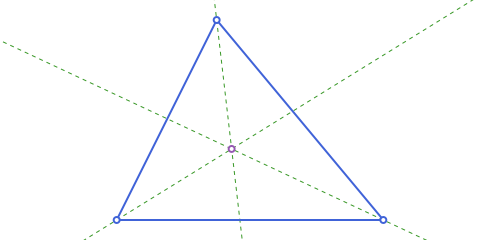
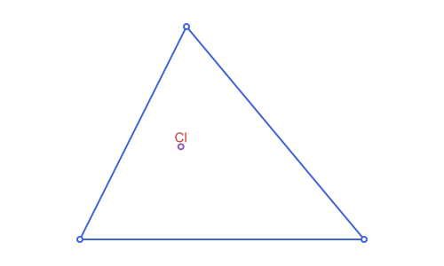

Triangles: Barycentric & Trilinear Coordinates
The running example, the scalene triangle used throughout this page:
using Apollonius
A, B, C = APPoint(0.0, 0.0), APPoint(8.0, 0.0), APPoint(3.0, 6.0)
t = APTriangle(A, B, C)Barycentric coordinates
Every point of the plane can be written as a weighted average of the three vertices, p = αA + βB + γC with α+β+γ = 1. These weights (α,β,γ) are its barycentric coordinates with respect to t. barycentric_point goes from coordinates to a point (weights don't need to be normalized; they're rescaled internally); barycentric_coordinates goes the other way.
barycentric_point(t, 1.0, 1.0, 1.0) # (1:1:1) is always the centroid
barycentric_coordinates(t, centroid(t)) # (1/3, 1/3, 1/3)(0.3333333333333334, 0.3333333333333333, 0.3333333333333333)
Most of the named centers below have simple, well-known barycentric coordinates (the incenter is (a:b:c) in the side lengths, for instance). barycentric_point is the easiest way to construct a center directly from a formula found in a reference like the Encyclopedia of Triangle Centers, without rederiving it in Cartesian coordinates.
Trilinear coordinates
Trilinear coordinates (x:y:z) are the other classical coordinate system for a triangle: unlike barycentric weights, they're proportional to the actual signed perpendicular distances from the point to the three sides. trilinear_coordinates returns those distances directly (not just up to a common scale); trilinear_point goes the other way, from a trilinear ratio to a point (internally converting to barycentric via (a·x : b·y : c·z)).
x, y, z = trilinear_coordinates(t, incenter(t))
x, y, z, inradius(t) # x == y == z == inradius(t): (1:1:1) is always the incenter(2.1315850917081556, 2.1315850917081556, 2.1315850917081556, 2.1315850917081556)trilinear_point(t, 1.0, 1.0, 1.0) ≈ incenter(t)true
Many named centers found in a reference like the Encyclopedia of Triangle Centers are given as trilinears rather than barycentrics (kenmotu_point below is one example), so having both conversions on hand avoids rederiving one from the other by hand. clawson_point (Kimberling X(19)) is exactly this: it has no simpler description than its own trilinears, tan(A) : tan(B) : tan(C), so it's built with trilinear_point directly rather than from some other geometric construction:
angA, angB, angC = angle_measure_at(t[1], t[2], t[3]), angle_measure_at(t[2], t[1], t[3]), angle_measure_at(t[3], t[1], t[2])
clawson_point(t) ≈ trilinear_point(t, tan(angA), tan(angB), tan(angC))true